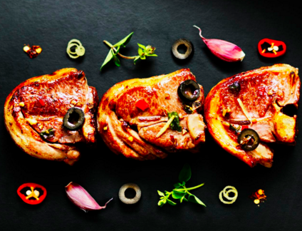
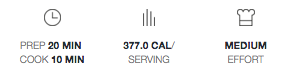

-
2 Lamb Loin Chops
Origin: British Lamb
From M&S select farms that we know and trust.
Our delicious lamb is fed a grass and cereal based diet on specially selected farms, then slowly matured for succulence and tenderness.
The lamb is matured on the bone for a minimum of 6 days.
Pan fry or grill adding seasoning, herbs or condiments for a tasty result
-
Intense, cherry-red wine with spicy aromas of blackberry and violets.
This wonderfully versatile red,great for partnering with roast red meats and game or a platter of mature French cheese.
-
Reviews
Lamb loin chops
Jas, London
Great quality lamb
I don't eat lamb that regularly, it is a bit of a treat, and this is so tender. Yum!
Reviewed on 6th November 2015
-
Allergens
-
Nutrition
-
Recipes

LAMB WITH CHILLI LEMON AND BLACK OLIVES

Ingredients
2 British Lamb Loin Chops
4 tbsp olive oil
2 garlic cloves (crushed)
1 tsp dried red chilli flakes
1 tsp dried oregano
1 lemon (zest and juice)
12 pitted black olives (sliced)
1 pinch of salt
Method
1 Arrange the lamb in a single layer in a shallow dish.
2 Drizzle on 2 tbsp oil and then sprinkle on the remaining ingredients.
3 Cover and leave to marinade for 20 minutes.
4 Heat the remaining oil in a large frying pan.
5 Drain the lamb, scraping off the marinade and then cook for 2 minutes either side until well coloured.
6 Reduce the heat, add the reserved marinade and 2 tbsp cold water and cook for a further 6-8 minutes or until tender or a little longer if you like
7 Serve the lamb and pan juices topped with the olives